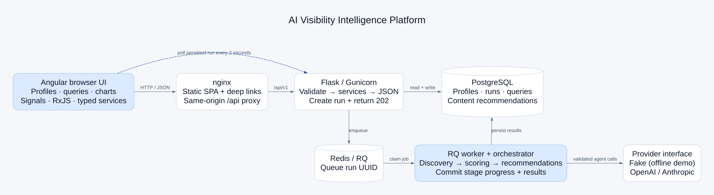
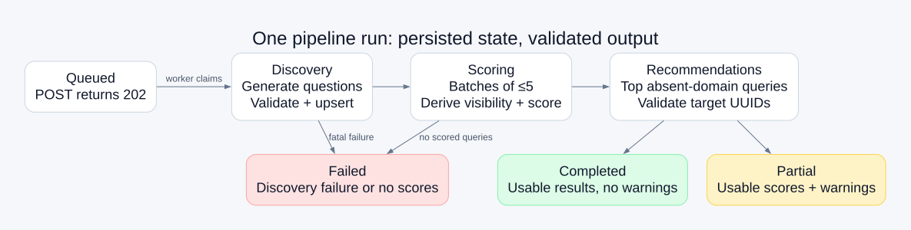
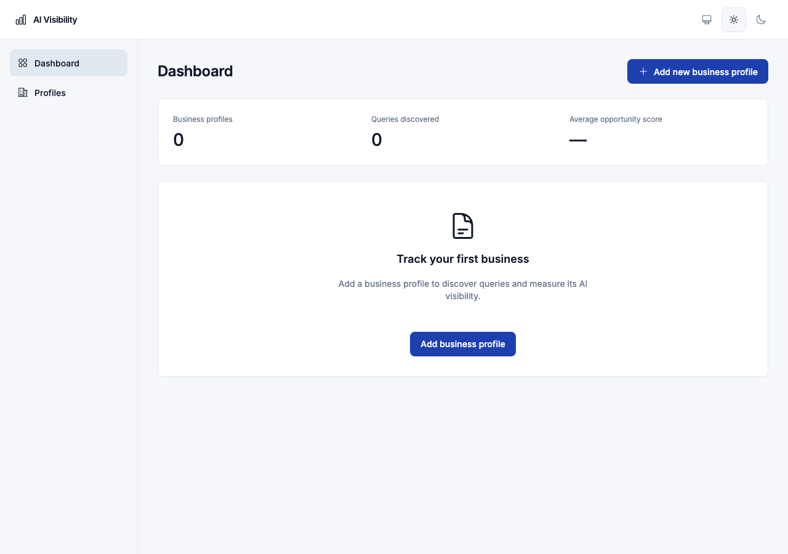
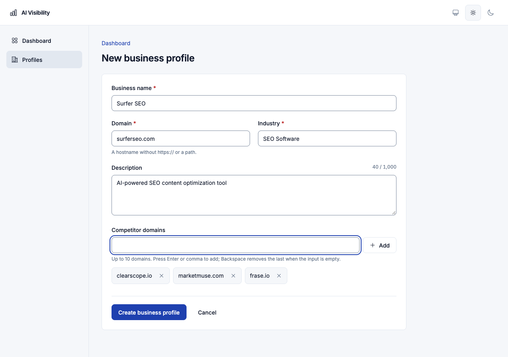
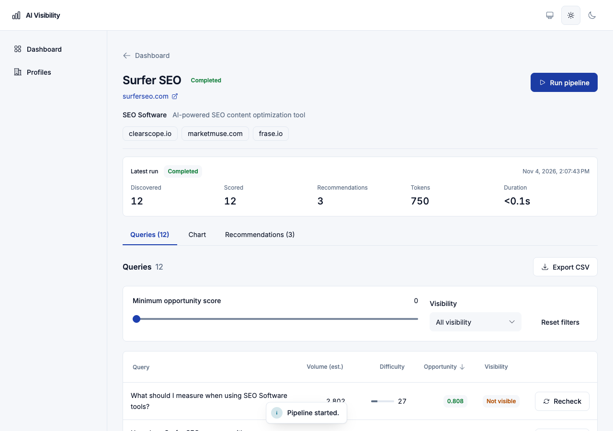
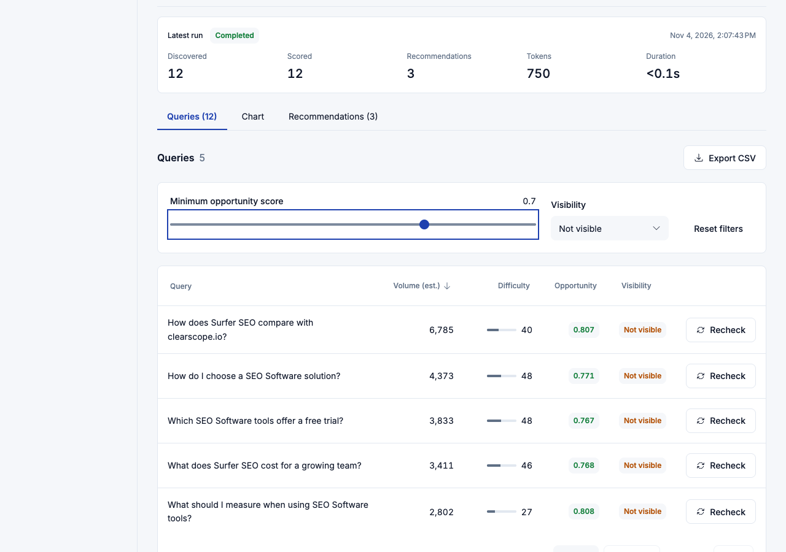
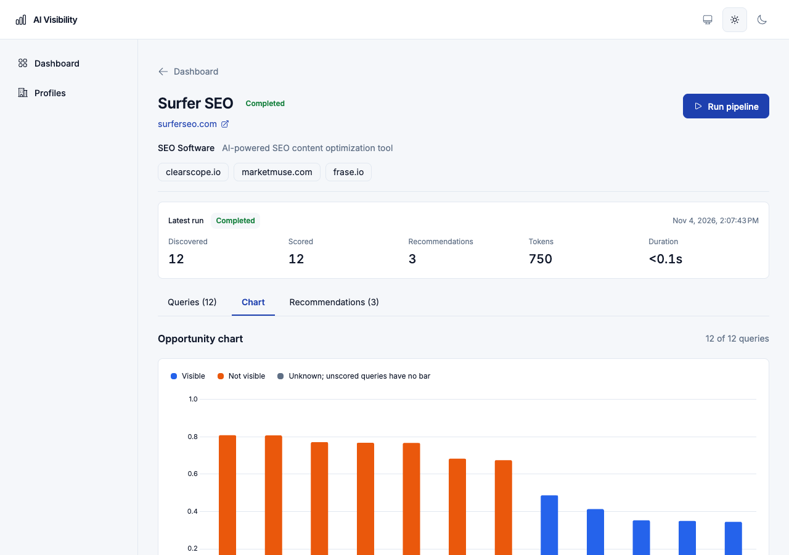
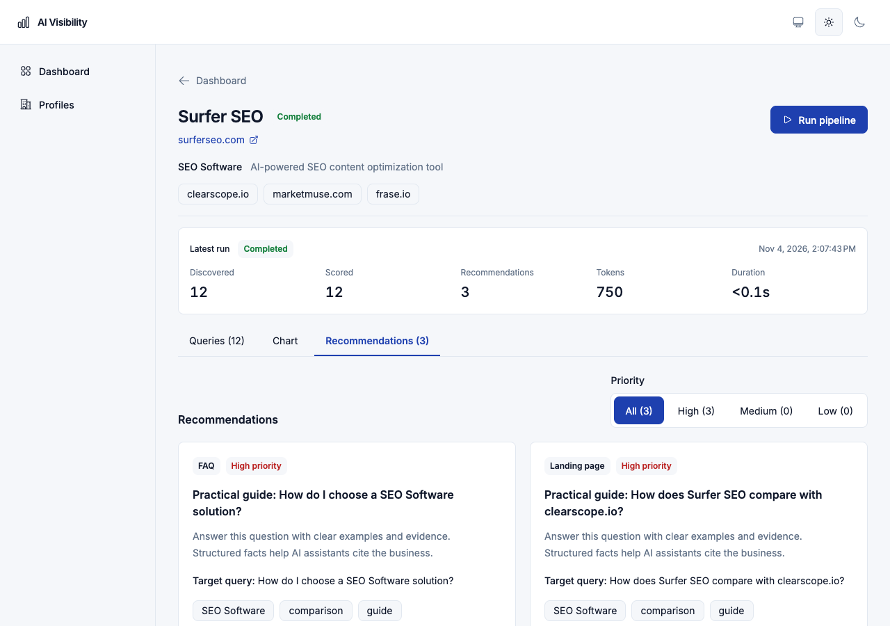

AI Visibility, from profile to recommendation
Follow the product flow, then see the frontend, API, queue, worker and provider boundaries.
Watch the workflow
The recording uses the real application with a separate fake-provider API, PostgreSQL database and RQ worker. No live model was called. The demonstrated run returned 12 questions, 3 recommendations and 750 simulated tokens.
Jump to a chapter
How the pieces fit together

Frontend
Typed services own HTTP; signals render profile/run state. Polling stops at terminal status or route destruction. URL-backed filters avoid redundant requests, and a bounded dashboard cache makes return navigation stable.
Backend
Flask validates and persists. An RQ worker orchestrates discovery, scoring and recommendations. Pure agents validate provider output; code derives visibility and opportunity scores.

Prefer still frames?
Open the product flow in screenshots











